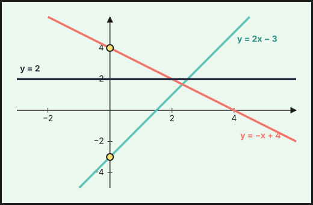
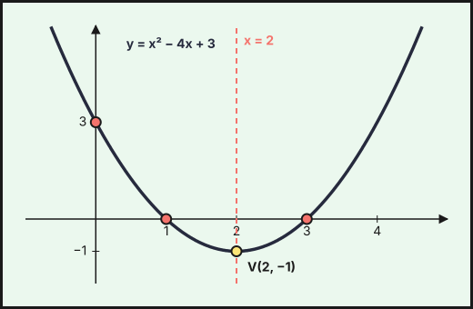

Funciones lineales y cuadráticas
1. Función de proporcionalidad directa
\(y=mx\) relaciona magnitudes directamente proporcionales. Su gráfica es una recta que pasa por el origen. La constante \(m\) es la pendiente.
Ejemplo: un taxi cobra \(1{,}20\) € por kilómetro: \(y=1{,}2\,x\).
2. Función afín (lineal)
\[y=mx+n\]
- \(m\) es la pendiente: cuánto sube (o baja) \(y\) cuando \(x\) aumenta una unidad.
- \(n\) es la ordenada en el origen: el valor de \(y\) cuando \(x=0\) (corte con el eje \(OY\)).
| Pendiente | La recta es |
|---|---|
| \(m>0\) | creciente |
| \(m<0\) | decreciente |
| \(m=0\) | horizontal (\(y=n\), función constante) |
Para dibujarla basta una tabla con dos puntos. Para \(y=2x-3\): si \(x=0\), \(y=-3\); si \(x=2\), \(y=1\).

Ecuación de la recta
- Dada la pendiente \(m\) y un punto \((x_0,y_0)\): \(\ y-y_0=m(x-x_0)\).
- Dados dos puntos \((x_1,y_1)\) y \((x_2,y_2)\): \(\ m=\dfrac{y_2-y_1}{x_2-x_1}\) y se sustituye uno de los puntos.
- Puntos de corte: con \(OX\) se hace \(y=0\); con \(OY\), \(x=0\).
Ejemplo: la recta por \(A(1,3)\) y \(B(3,9)\) tiene \(m=\dfrac{9-3}{3-1}=3\), y \(y-3=3(x-1)\), es decir, \(y=3x\).
Rectas paralelas y secantes
Dos rectas \(y=m_1x+n_1\) e \(y=m_2x+n_2\) son paralelas si \(m_1=m_2\) y se cortan si \(m_1\neq m_2\). El punto de corte se halla resolviendo el sistema. Ejemplo: \(y=2x-3\) e \(y=-x+4\) se cortan en \(2x-3=-x+4\Rightarrow x=\frac73\), \(y=\frac53\).
Problemas
Ejemplo: una tarifa de móvil cuesta \(12\) € fijos más \(0{,}05\) € por minuto: \(C(x)=12+0{,}05x\). Con \(240\) minutos se pagan \(24\) €. Otra tarifa cuesta \(0{,}10\) € por minuto sin cuota: \(D(x)=0{,}1x\). Las dos cuestan lo mismo si \(12+0{,}05x=0{,}1x\), es decir, con \(x=240\) minutos. A partir de ahí conviene la primera.
3. Función cuadrática
\[y=ax^2+bx+c\qquad(a\neq0)\]
Su gráfica es una parábola.
- Si \(a>0\), está abierta hacia arriba (tiene un mínimo); si \(a<0\), hacia abajo (tiene un máximo).
- El vértice está en \(x_v=-\dfrac{b}{2a}\), y es el punto de mayor o menor valor. Su ordenada es \(y_v=f(x_v)\).
- El eje de simetría es la recta vertical \(x=x_v\).
- Cortes con \(OX\): soluciones de \(ax^2+bx+c=0\) (ninguno, uno o dos, según el discriminante).
- Corte con \(OY\): \((0,c)\).
Ejemplo: \(y=x^2-4x+3\). Vértice: \(x_v=\dfrac{4}{2}=2\), \(y_v=4-8+3=-1\), o sea \(V(2,-1)\) (mínimo). Cortes con \(OX\): \(x^2-4x+3=0\Rightarrow x=1\) y \(x=3\). Corte con \(OY\): \((0,3)\). La función decrece en \((-\infty,2)\) y crece en \((2,+\infty)\).

Para dibujar una parábola
- Calcula el vértice.
- Calcula los cortes con los ejes.
- Haz una tabla con algunos valores a ambos lados del vértice (la parábola es simétrica).
- Une los puntos con una curva suave.
Problemas de máximos y mínimos
Ejemplo: se lanza una pelota y su altura (m) es \(h(t)=-5t^2+20t\) a los \(t\) segundos. El máximo está en \(t_v=\dfrac{-20}{2\cdot(-5)}=2\) s y vale \(h(2)=-20+40=20\) m. Vuelve al suelo cuando \(h=0\): \(t=0\) o \(t=4\) s.
Una solución puede no tener sentido: un tiempo no puede ser negativo, ni una longitud. Examina el dominio antes de dar el resultado.
4. Comparar representaciones
Una misma relación puede darse por enunciado, tabla, fórmula o gráfica. Hay que saber pasar de una a otra:
- Una tabla es lineal si, al aumentar \(x\) en pasos iguales, \(y\) aumenta también en cantidades iguales.
- Una tabla es cuadrática si las diferencias de \(y\) no son constantes pero las segundas diferencias sí lo son.
Ejemplo: con \(y=x^2\) y \(x=0,1,2,3,4\) se tiene \(y=0,1,4,9,16\); las primeras diferencias son \(1,3,5,7\) y las segundas, \(2,2,2\).
Escribe y=2x-3 y f(x)=x^2-4x+3 en GeoGebra y mueve los deslizadores a, b, c de f(x)=a x^2+b x+c para ver cómo cambian la apertura, el vértice y los cortes con los ejes.
- Recta: \(y=mx+n\) (pendiente \(m\), ordenada \(n\)). Paralelas: misma pendiente.
- Parábola: \(y=ax^2+bx+c\); vértice en \(x=-\frac{b}{2a}\).
- \(a>0\): mínimo. \(a<0\): máximo.
- Cortes: con \(OX\), \(y=0\); con \(OY\), \(x=0\).
Debes saber hacer
- Representar rectas y hallar su ecuación a partir de dos puntos o de un punto y la pendiente.
- Reconocer rectas paralelas y hallar el punto de corte de dos rectas.
- Hallar vértice, eje de simetría y cortes de una parábola y representarla.
- Resolver problemas con funciones lineales y cuadráticas (tarifas, máximos y mínimos).
- Distinguir una tabla lineal de una cuadrática.
Saberes de la Orden de 30 de mayo de 2023 (BOJA nº 104) que se trabajan en este tema: MAT.3.D.5.2, MAT.3.D.4.1, MAT.3.D.5.1.